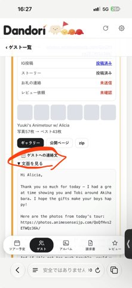
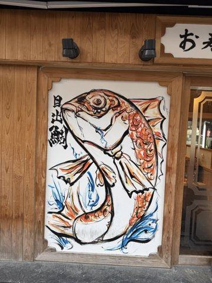
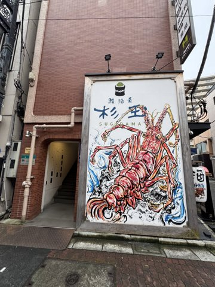
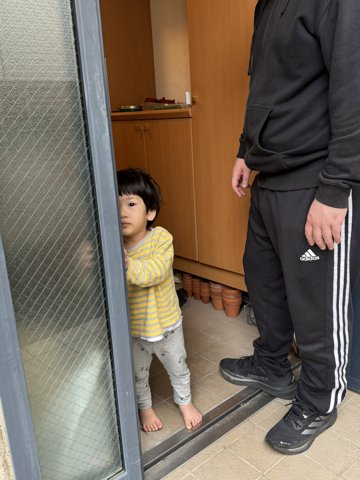
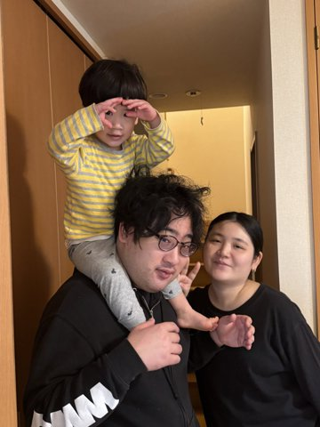
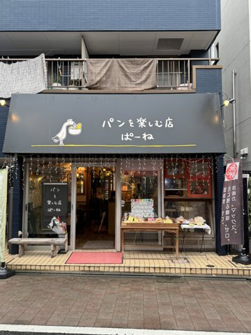

写真日記
111日 ・ 6,614枚 ・ 4,917km
写真Claude
2026年11月
21日ぶんの記録 ・ 写真 1,517枚 ・ 移動 154.0km
月火水木金土日


11月15日 日曜日

13:33 大山東町（板橋区）「コメダ珈琲店」の店先
写真は43枚（画像43・動画0）。01:27はDandoriのゲスト画面。10:56は大山東町（板橋区）で、「日出鯛」と書かれた鯛の絵の扉、10:57は海老の絵の壁。11:40は玄関の戸の前に立つ子どもと男性、11:43は肩に子どもを乗せた男性と女性。13:33は「コメダ珈琲店」の店先、13:59は橙色の蓋の容器に入った黄色い飲み物と、コップを持つ子ども。14:38は「パンを楽しむ店 ぱーね」の店先。15:12は東京で、Brooklyn Parlorの入口に並ぶ人たち。19:01は住吉（江東区）で、ビールらしきもののジョッキを持つ男性2人。19:10はご飯、目玉焼き、きのこの載ったハンバーグらしきものの皿。移動は大山東町 → 東京 → 住吉。
この日の写真










訪れた場所
大山東町（板橋区）10:56–14:49 ・ 19枚
東京15:05–17:23 ・ 10枚
住吉（江東区）18:53–22:52 ・ 8枚
Claudeとは、04:10の深夜バッチ・停止中PJ自走改善で、ディスク逼迫の主犯（Chrome一時コピー56GB）を特定して1手化した。この日の稼働は362ターン、593分（00:51〜23:59）。